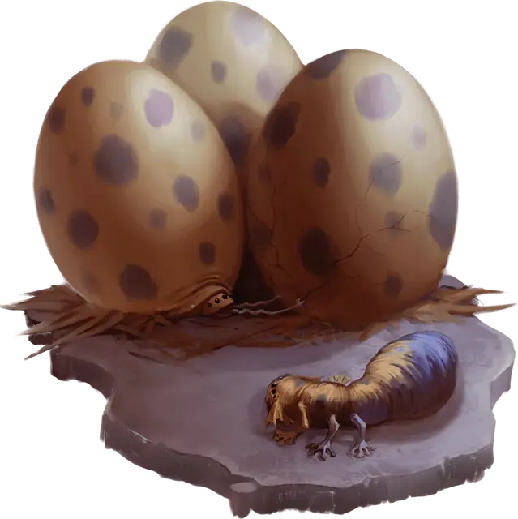

Личинка охотника за яйцами
Egg Hunter Hatchling
Крошечный Монстр, без мировоззрения

Класс Доспеха 14 (природный доспех)
Хиты 28 (8к4 + 8)
Скорость 30 футов, лазая 30 футов, копая 10 футов
| мод | спас | ||
|---|---|---|---|
| СИЛ | 8 | −1 | −1 |
| ЛОВ | 17 | +3 | +5 |
| ТЕЛ | 13 | +1 | +1 |
| мод | спас | ||
|---|---|---|---|
| ИНТ | 1 | −5 | −5 |
| МДР | 10 | +0 | +2 |
| ХАР | 5 | −3 | −3 |
Навыки Восприятие +2, Скрытность +7
Иммунитет к состояниям испуг
Чувства тёмное зрение 60 футов, пассивное Восприятие 12
Опасность 2 (450 опыта)
Бонус мастерства +2
Особенности
Амфибия. Охотник за яйцами может дышать и воздухом и под водой.
Действия
Мультиатака. Охотник за яйцами совершает две атаки Зубами.
Яйцевой зуб. Рукопашная атака оружием: +5 к попаданию, досягаемость 5 фт., одна цель. Попадание: 10 (2к6+3) колющего урона или 17 (4к6+3) колющего урона если цель предмет.
Бонусные действия
Быстрое движение. Охотник за яйцами совершает Рывок или Уклонение.
Описание
Яйцо дракона, осушенное охотником за яйцами, наполняется 1к6 новыми яйцами, которые вылупляются внутри скорлупы яйца дракона за 1к6 дней. Детеныши охотника за яйцами вылупляются через 1к4 дня, используя иглообразный зуб, который выходит из их голов. Они прожорливы, поглощая любые другие драконьи яйца поблизости, если могут. Детеныш созревает во взрослую особь примерно через двадцать дней после того, как освободится из своего драконьего яйца.
Охотники за яйцами - это паразиты, которые выискивают драконьи яйца и питаются их содержимым. Они откладывают свои собственные яйца в пустую скорлупу, пряча яйца от ничего не подозревающих родителей или опекунов драконов.